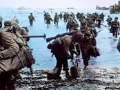
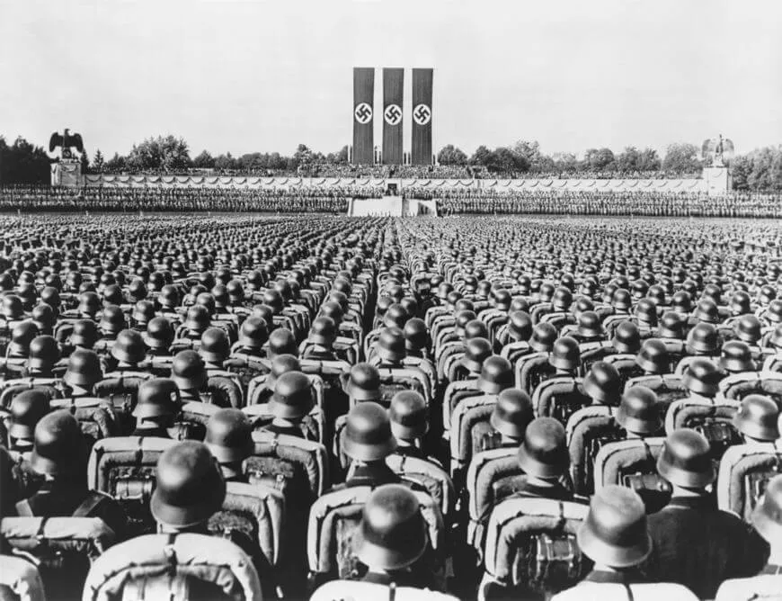

Causas da Segunda Guerra Mundial
A Segunda Guerra Mundial está relacionada com a expansão do Europa e teve como causa direta o expansionismo germânico naquele período. Além disso, a derrota na Primeira Guerra tornou-se fonte de humilhação e causa de uma grave crise econômica que atingiu a Alemanha na década de 1920.
Esse cenário permitiu a ascensão do radicalismo da extrema-direita, cujo expoente máximo foi o nazismo. Os nazistas criticavam os termos do Tratado de Versalhes, defendiam a militarização da Alemanha e tinham opiniões abertamente antissemitas. O crescimento dos nazistas durante a República de Weimar (1919-1933) foi exponencial, muito por conta de Adolf Hitler.
Os nazistas, por fim, assumiram o poder na Alemanha, em 1933, e iniciaram a construção de um governo totalitário. Progressivamente, eles procuraram recuperar a economia alemã e reorganizar o exército alemão (desestruturado desde a Primeira Guerra). Uma vez que as forças militares alemãs eram fortes o bastante, deu-se início à expansão territorial.

A expansão territorial defendida pelos alemães fazia parte de um elemento da ideologia nazista que defendia a formação de um “espaço vital” que abrigaria os arianos. A prosperidade dos alemães seria garantida por meio da exploração de povos enxergados como “inferiores”, como os eslavos.
No final da década de 1930, os alemães voltaram-se, a princípio, contra a Áustria, nação historicamente de idioma e cultura alemãs. Planos de unificação da Alemanha e Áustria tinham sido ventilados após a Primeira Guerra, mas foram barrados durante as negociações que levaram à assinatura do Tratado de Versalhes.
Em 1938, os alemães iniciaram uma campanha maciça para garantir a unificação dos dois países. Isso se concretizou em março de 1938, em um evento conhecido como Anschluss. Depois, os alemães voltaram-se contra a Checoslováquia, por conta de uma região daquele país chamada Sudetos.
As exigências alemãs sobre os Sudetos alarmaram ingleses e franceses, e a tensão diplomática na Europa aumentou. Para contornar essa situação, foi organizada a Conferência de Munique, em 1938. Nessa conferência, ingleses e franceses, temerosos de que uma guerra fosse iniciada, cederam às pressões alemãs e permitiram que os alemães invadissem o território da Checoslováquia.
Um ponto importante da Conferência de Munique é que ingleses e franceses demandaram de Hitler o compromisso de que a Checoslováquia seria a última exigência territorial da Alemanha. Hitler firmou esse acordo, mas estava blefando. Ele não acreditava que ingleses e franceses teriam coragem de declarar guerra aos alemães.
Assim, em 1939, Hitler colocou seu olhos sobre a Polônia. À medida que a tensão entre Alemanha e Polônia aumentava, ingleses e franceses assinaram acordos militares com o segundo país para resguardá-lo, em caso de agressão do primeiro. Como Hitler não acreditava na resposta francesa e inglesa, ele ordenou o ataque contra a Polônia em 1º de setembro de 1939.

Esse ato de agressão foi considerado o estopim da Segunda Guerra, pois, dias depois, Reino Unido e França declararam guerra à Alemanha.
bPaíses participantes da Segunda Guerra Mundial
A Segunda Guerra Mundial teve dezenas de nações participantes, com graus diferentes de envolvimento no esforço bélico. Esse conflito foi lutado por nações do Eixo contra as nações Aliadas, sendo:
- Aliados: Reino Unido, França, EUA e URSS (principais forças);
- Eixo: Alemanha, Itália e Japão (principais forças).
Fases da Segunda Guerra Mundial
A Segunda Guerra Mundial estendeu-se por seis anos e alcançou um nível de mobilização chamado pelos historiadores de guerra total. Esses anos podem ser divididos em três fases, que são:
